SLIDE_1 (TS) — Time Series Analysis · Basic Knowledge · 46 หน้า
บทนี้แสดงสไลด์ Lecture 1 เกือบทุกหน้าตามลำดับ ใต้แต่ละหน้ามีคำอธิบายเป็นภาษาง่าย ข้อความที่ไฮไลต์สีเหลืองคือข้อความที่อาจารย์ใส่สีในสไลด์ กล่อง “ต้องรู้ก่อน” ปูพื้นคณิตศาสตร์ กล่อง “จุดสอบ” สรุปสิ่งที่ต้องทำได้ โจทย์ท้ายสไลด์สองข้อ คือ Example 1.9 และ Homework มีการพิสูจน์เต็มทุกขั้น
บทนี้ยังไม่ได้รวมสิ่งที่อาจารย์พูดในวิดีโอ Class 1 จะเพิ่มภายหลังพร้อมระบุคลิปและเวลา ถ้าอ่านแล้วติดตรงไหน ถามต่อในแชตได้
Shumway & Stoffer, Time Series Analysis and Its Applications สไลด์อ้างหน้า 12 (white noise), หน้า 19 (mean function), หน้า 20 (autocovariance) และหน้า 22 (ACF) ฉบับย่อที่อ่านฟรีคือ tsaEZ.pdf อ่านเสริมได้ที่ Penn State STAT 510 บทที่ 1
| หัวข้อ | เนื้อหา | สไลด์ |
|---|---|---|
| 1 | Time series กับ cross-sectional data | 2–8 |
| 2 | องค์ประกอบของ time series | 10–19 |
| 3 | Decomposition: signal กับ noise | 20–24 |
| 4 | Random variable, E, Var, Cov | 26–29 |
| 5 | Time series คือ stochastic process | 30–34 |
| 6 | Mean function, autocovariance, ACF | 35–37 |
| 7 | White noise | 38–44 |
| 8 | Example 1.9: moving average 3 จุด | 45 |
| 9 | Homework: random walk with drift | 46 |
| 10 | แบบฝึกท้ายบท | — |
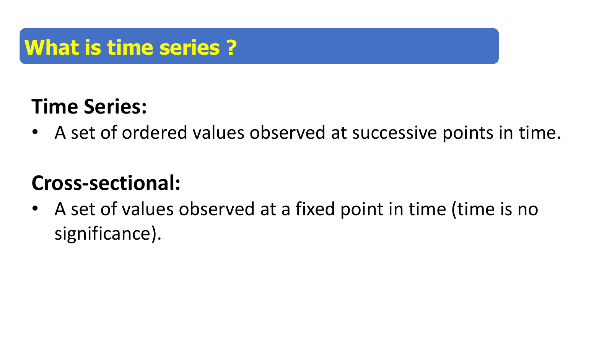
สไลด์ให้นิยามสองแบบคู่กัน Time series คือชุดของค่าที่ ordered และสังเกต ณ จุดเวลาที่ต่อเนื่องกัน ส่วน cross-sectional คือชุดของค่าที่สังเกต ณ จุดเวลาเดียว โดยเวลาไม่มีความสำคัญ เปรียบเทียบได้กับภาพสองแบบ: time series เหมือนวิดีโอของสิ่งเดียวที่ถ่ายต่อเนื่อง ลำดับของเฟรมคือเนื้อเรื่อง ส่วน cross-sectional เหมือนภาพถ่ายหมู่หนึ่งใบ ทุกคนถูกบันทึกในขณะเดียวกัน และจะเรียงคนซ้ายขวาอย่างไรก็ได้ข้อมูลเท่าเดิม
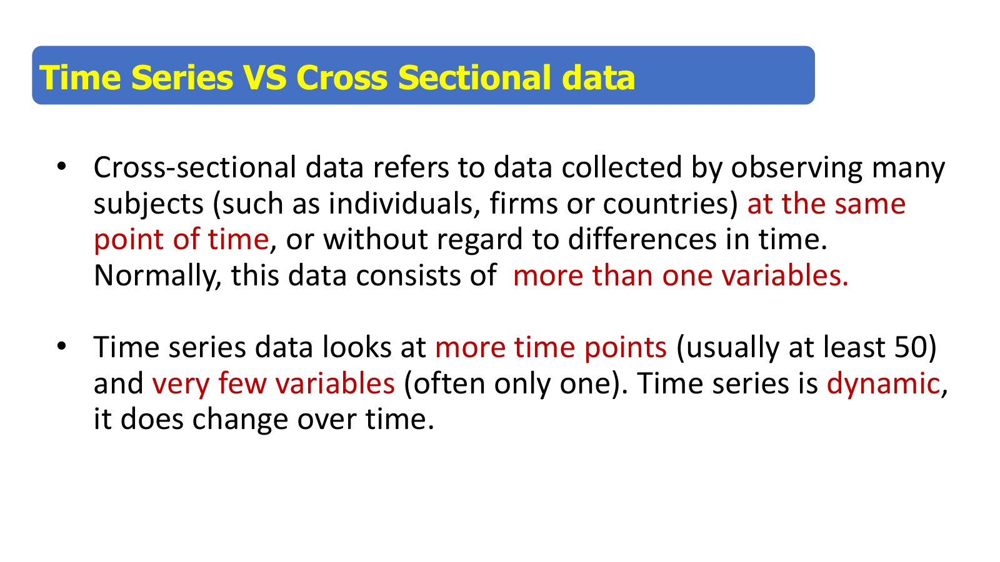
Cross-sectional data ได้จากการสังเกตหลาย subject เช่น บุคคล บริษัท หรือประเทศ at the same point of time และโดยปกติมี more than one variables. ส่วน time series data ดู more time points ซึ่งโดยปกติอย่างน้อย 50 จุด และมี very few variables ซึ่งมักมีตัวเดียว และ time series เป็น dynamic คือเปลี่ยนไปตามเวลา ตัวอย่าง: รายได้ของ 50 บริษัท ณ สิ้นปี 2025 เป็น cross-sectional ส่วนยอดขายของร้านเดียวที่จดทุกเดือนนาน 6 ปี รวม 72 จุด เป็น time series
| Cross-sectional | Time series | |
|---|---|---|
| เก็บเมื่อใด | จุดเวลาเดียว | หลายจุดเวลาต่อเนื่อง ปกติอย่างน้อย 50 จุด |
| จำนวนตัวแปร | มากกว่าหนึ่งตัว | น้อยมาก มักมีตัวเดียว |
| สลับลำดับแถวได้หรือไม่ | ได้ ความหมายไม่เปลี่ยน | ไม่ได้ ลำดับคือข้อมูล |
| ลักษณะ | คงที่ ณ ขณะนั้น | dynamic เปลี่ยนตามเวลา |
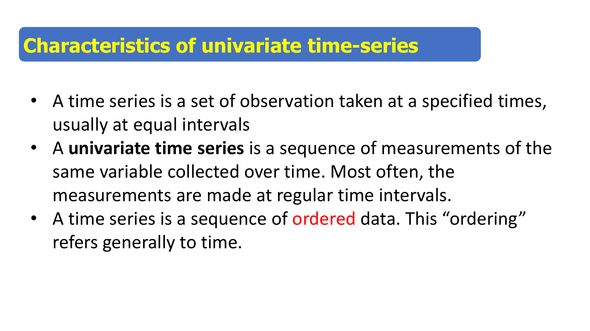
หน้านี้ให้ลักษณะสามข้อของ univariate time series ข้อแรก time series เป็นชุดของค่าสังเกตที่เก็บ ณ เวลาที่กำหนด โดยปกติมีช่วงห่างเท่ากัน ข้อที่สอง univariate time series เป็นลำดับของการวัดตัวแปรเดียวกันซ้ำตามเวลา คำว่า univariate แปลว่าตัวแปรเดียว ข้อที่สาม time series เป็นลำดับของข้อมูลที่มีการเรียง และ “ordering” นี้โดยทั่วไปหมายถึงเวลา
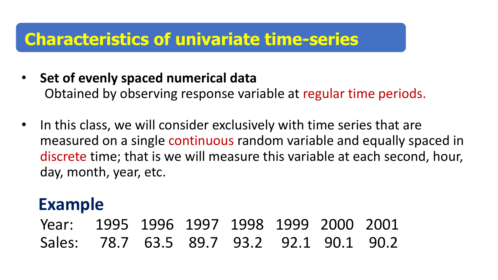
Time series เป็นชุดข้อมูลตัวเลขที่ห่างเท่ากัน ได้จากการสังเกต response variable ณ regular time periods. วิชานี้พิจารณาเฉพาะ time series ที่วัดจากตัวแปรสุ่ม continuous ตัวเดียว และห่างเท่ากันใน discrete time เช่น ทุกวินาที ชั่วโมง วัน เดือน หรือปี คำว่า continuous หมายถึงค่าที่วัดเป็นทศนิยมได้ เช่น ยอดขาย 78.7 ส่วน discrete time หมายถึงเวลานับเป็นจุด ๆ ได้ Example ในสไลด์คือยอดขายรายปี 1995 ถึง 2001: 78.7, 63.5, 89.7, 93.2, 92.1, 90.1, 90.2 ถ้าย้ายค่า 63.5 ไปไว้ปี 2001 เรื่องราวจะเปลี่ยนจากการตกในปี 1996 แล้วฟื้นตัว เป็นการร่วงในปีสุดท้าย ตัวเลขชุดเดิมแต่ความหมายต่างกัน นี่คือเหตุผลที่ลำดับสลับไม่ได้
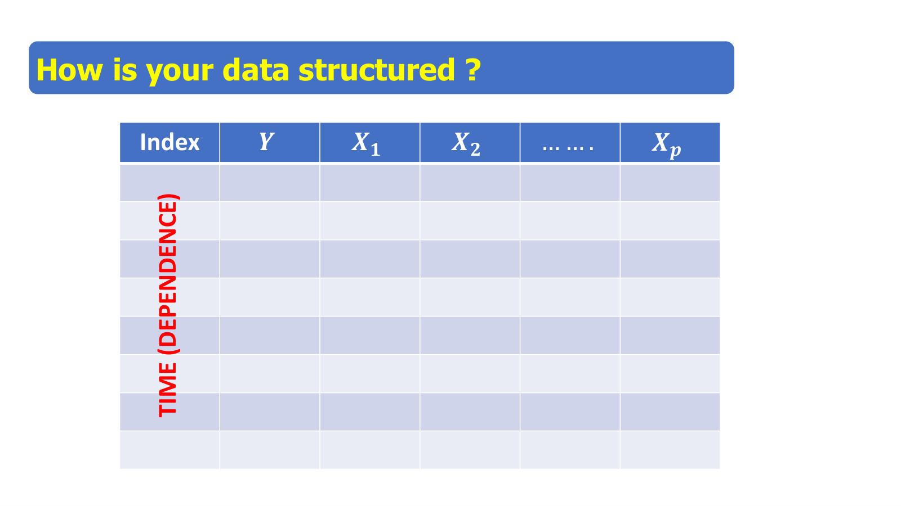
ตารางข้อมูลทั่วไปมีคอลัมน์ตัวแปรตาม \(Y\) และตัวแปรอิสระ \(X_1,\dots,X_p\) และแต่ละแถวเป็นอิสระต่อกัน ใน time series คอลัมน์แรกคือเวลา และสไลด์กำกับว่า TIME (DEPENDENCE) หมายความว่าแต่ละแถวขึ้นกับแถวก่อนหน้า ค่าของวันนี้สัมพันธ์กับค่าของเมื่อวาน ข้อนี้เป็นต้นเหตุของเครื่องมือทั้งหมดในวิชา เพราะวิธีสถิติทั่วไปสมมติว่าข้อมูลเป็นอิสระต่อกัน จึงต้องมีเครื่องมือใหม่ที่วัดความสัมพันธ์ของตัวแปรกับอดีตของตัวเอง คือ autocovariance และ ACF ในหัวข้อ 6
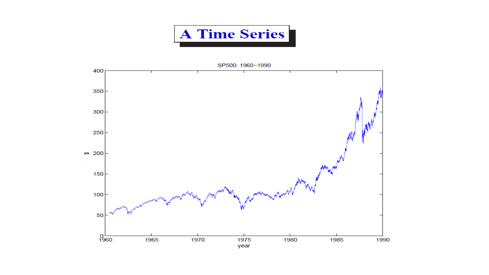
ดัชนี S&P 500 ตั้งแต่ปี 1960 ถึง 1990 เริ่มที่ประมาณ 55 จุด แกว่งอยู่ระหว่าง 60 ถึง 120 ตลอดปี 1965 ถึง 1980 โดยลดลงชัดเจนช่วงปี 1974 ถึง 1975 แล้วเพิ่มขึ้นเร็วจนถึงประมาณ 350 จุดในปี 1990 ค่าเฉลี่ยของช่วงหลังสูงกว่าช่วงแรกมาก จึงมี trend ขาขึ้น และการแกว่งช่วงปี 1985 ถึง 1990 กว้างกว่าช่วงทศวรรษ 1960 ความแปรปรวนจึงไม่คงที่
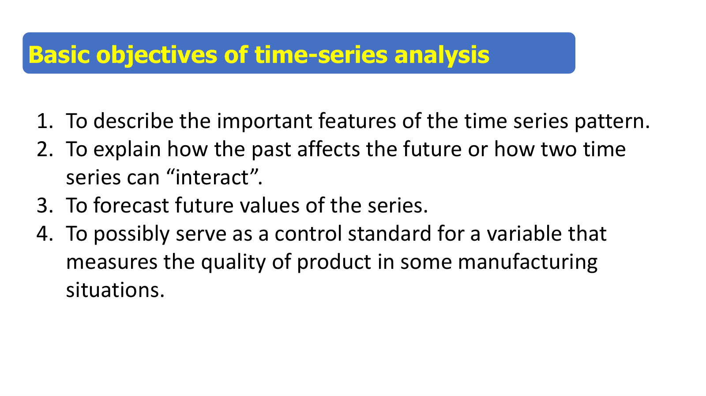
การวิเคราะห์ time series มีวัตถุประสงค์พื้นฐานสี่ข้อ ข้อแรกคือ describe บรรยายลักษณะสำคัญของรูปแบบของ series ข้อที่สองคือ explain อธิบายว่าอดีตส่งผลต่ออนาคตอย่างไร หรือ series สองชุด “interact” กันอย่างไร ข้อที่สามคือ forecast พยากรณ์ค่าในอนาคต ข้อที่สี่คือใช้เป็น control standard สำหรับตัวแปรที่วัดคุณภาพของสินค้าในการผลิต เช่น ถ้าค่าที่วัดได้หลุดจากช่วงที่โมเดลคาดไว้ แสดงว่ากระบวนการผลิตผิดปกติ
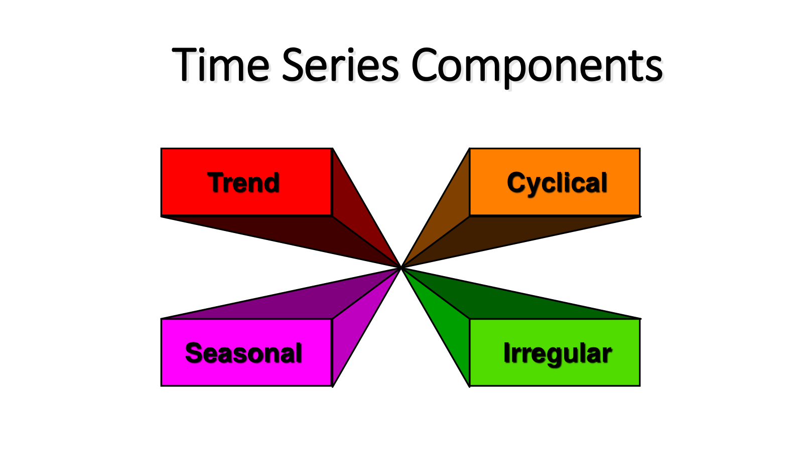
Time series หนึ่งเส้นเกิดจากองค์ประกอบสี่อย่างที่ทำงานพร้อมกัน คือ Trend, Seasonal, Cyclical และ Irregular ตัวอย่าง: ยอดขายของร้านหนึ่งอาจโตขึ้นทุกปี (trend) สูงทุกเดือนธันวาคม (seasonal) ซบเซาเป็นช่วงหลายปีตามภาวะเศรษฐกิจ (cyclical) และขึ้นลงรายวันแบบสุ่ม (irregular) งานของการวิเคราะห์คือแยกองค์ประกอบเหล่านี้ออกจากกัน
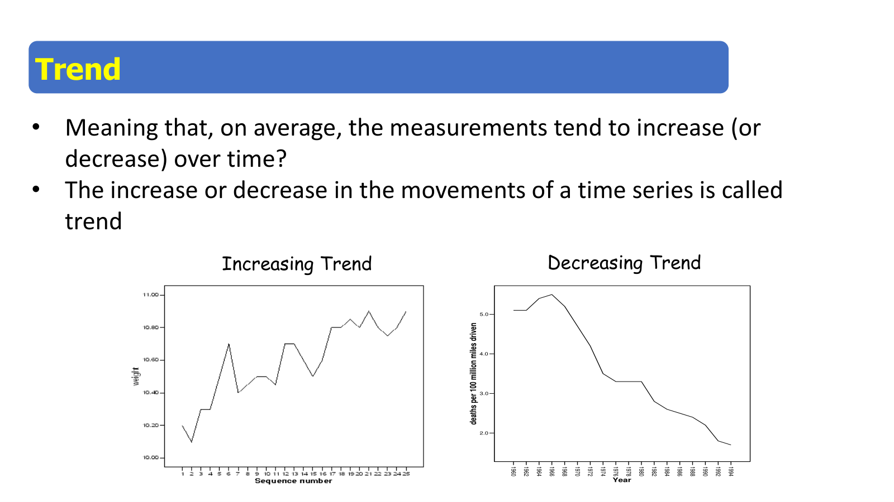
Trend หมายถึงโดยเฉลี่ยแล้วค่าที่วัดมีแนวโน้มเพิ่มขึ้นหรือลดลงตามเวลา กราฟแรกเป็น increasing trend: น้ำหนักที่วัด 25 ครั้งเริ่มที่ประมาณ 10.2 และจบที่ประมาณ 10.9 ระหว่างทางมีช่วงที่ลดลง เช่น จาก 10.7 ที่ครั้งที่ 6 เหลือ 10.4 ที่ครั้งที่ 7 แต่ระดับเฉลี่ยสูงขึ้น กราฟที่สองเป็น decreasing trend: จำนวนผู้เสียชีวิตต่อการขับ 100 ล้านไมล์ลดจากประมาณ 5.5 ในปี 1966 เหลือประมาณ 1.7 ในปี 1994 trend เป็นเรื่องของค่าเฉลี่ยระยะยาว การลดลงชั่วคราวระหว่างทางจึงไม่ได้ลบล้าง trend เปรียบได้กับการเดินขึ้นเขาที่มีทางลงสั้น ๆ เป็นช่วง ปลายทางยังสูงกว่าต้นทาง
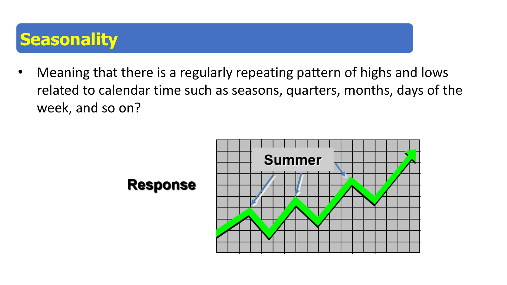
Seasonality คือรูปแบบสูงต่ำที่ซ้ำอย่างสม่ำเสมอและผูกกับปฏิทิน เช่น ฤดูกาล ไตรมาส เดือน หรือวันในสัปดาห์ ในกราฟ จุดสูงสุดของทุกรอบตรงกับ Summer ของทุกปี ตำแหน่งของยอดจึงทำนายล่วงหน้าได้ และยอดของแต่ละรอบสูงกว่ารอบก่อนหน้า แสดงว่ามี trend ขาขึ้นซ้อนอยู่ด้วย องค์ประกอบหลายอย่างจึงอยู่ในเส้นเดียวกันได้
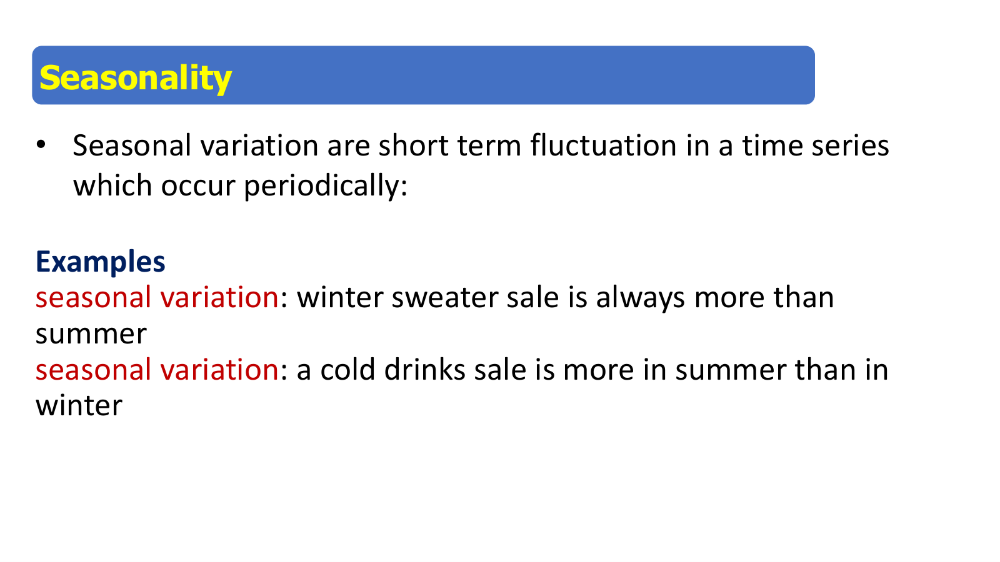
Seasonal variation คือความผันผวนระยะสั้นที่เกิดเป็นคาบ สไลด์ให้ Examples สองข้อ ข้อแรก seasonal variation: ยอดขายเสื้อกันหนาวในฤดูหนาวมากกว่าฤดูร้อนเสมอ ข้อที่สอง ยอดขายเครื่องดื่มเย็นในฤดูร้อนมากกว่าฤดูหนาว ทั้งสองตัวอย่างมีจุดร่วมคือ รอบยาวหนึ่งปีและยอดเกิดในช่วงเดิมของปฏิทินทุกปี
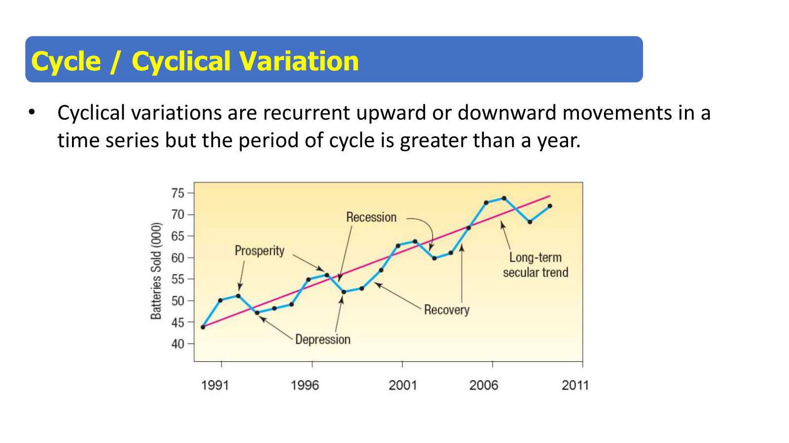
Cyclical variation คือการเคลื่อนไหวขึ้นหรือลงที่เกิดซ้ำ แต่คาบของรอบยาวกว่าหนึ่งปี กราฟแสดงยอดขายแบตเตอรี่ (พันก้อน) ปี 1991 ถึง 2011 ซึ่งเพิ่มจากประมาณ 44 เป็น 72 เส้นตรงที่พาดขึ้นคือ long-term secular trend ข้อมูลจริงวนรอบเส้นนี้เป็นสี่ระยะ: Prosperity เมื่ออยู่เหนือเส้นและถึงจุดสูงสุด, Recession เมื่อเริ่มลดลง, Depression เมื่ออยู่ใต้เส้นและถึงจุดต่ำสุด และ Recovery เมื่อกลับขึ้น หนึ่งรอบใช้เวลาหลายปีและไม่เกิดในเดือนเดิมของทุกปี จึงเป็น cyclical ไม่ใช่ seasonal
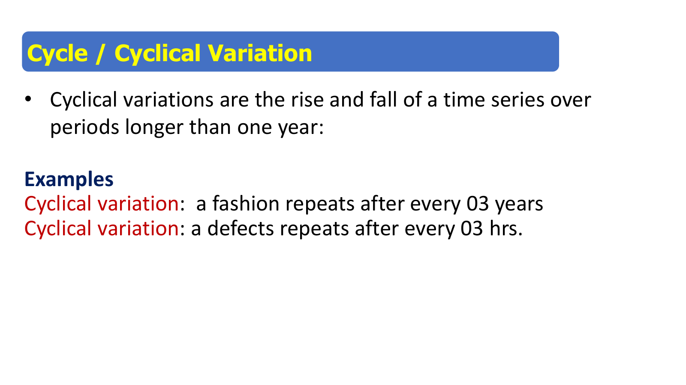
Cyclical variation คือการขึ้นและลงของ time series ในช่วงที่ยาวกว่าหนึ่งปี Examples ในสไลด์: Cyclical variation: แฟชั่นวนกลับมาทุก 3 ปี และของเสียเกิดซ้ำทุก 3 ชั่วโมง ตัวอย่างที่สองมีรอบสั้นกว่าหนึ่งปี จุดที่ทำให้เป็น cycle คือรอบไม่ผูกกับปฏิทิน ของเสียเกิดตามรอบของเครื่องจักร ไม่ใช่ตามฤดูกาล
| Seasonal | Cyclical | |
|---|---|---|
| ผูกกับปฏิทิน | ใช่ เกิดช่วงเดิมทุกปี | ไม่ |
| ความยาวรอบ | คงที่ ไม่เกินหนึ่งปี | ไม่คงที่ โดยทั่วไปยาวกว่าหนึ่งปี |
| ตัวอย่าง | ยอดขายเครื่องดื่มเย็นสูงทุกฤดูร้อน | วัฏจักรเศรษฐกิจ รอบละหลายปี |
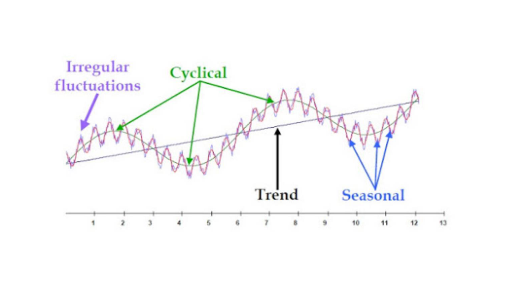
รูปนี้รวมทุกองค์ประกอบบนแกนเวลา 1 ถึง 13 Trend คือเส้นตรงที่เอียงขึ้นตลอดช่วง Cyclical คือคลื่นยาวที่ต่ำสุดประมาณช่วง 4 ถึง 5 และสูงสุดประมาณช่วง 7 Seasonal คือคลื่นสั้นที่ซ้ำถี่และซ้อนอยู่บนคลื่นยาว Irregular fluctuations คือรอยหยักเล็กที่เหลือ วิธีแยกองค์ประกอบเมื่อเห็นกราฟลักษณะนี้คือดูความยาวของรอบ: รอบยาวที่สุดคือ cyclical รอบสั้นที่ซ้ำสม่ำเสมอคือ seasonal และรอยหยักที่ไม่มีแบบแผนคือ irregular
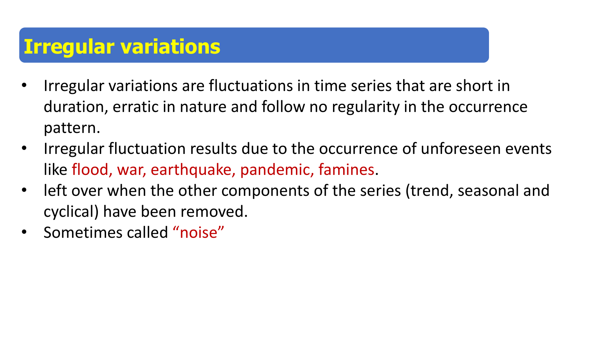
Irregular variations คือความผันผวนที่มีระยะสั้น ไม่แน่นอน และไม่มีความสม่ำเสมอในรูปแบบการเกิด เกิดจากเหตุการณ์ที่ไม่คาดคิด เช่น flood, war, earthquake, pandemic, famines เป็นส่วนที่เหลืออยู่เมื่อนำองค์ประกอบอื่น คือ trend, seasonal และ cyclical ออกแล้ว บางครั้งเรียกว่า “noise”
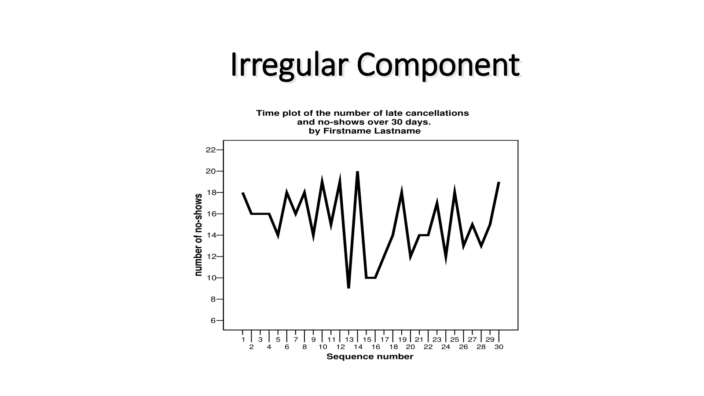
จำนวนผู้ยกเลิกนัดกะทันหันและไม่มาตามนัดใน 30 วัน แกว่งระหว่าง 9 ในวันที่ 13 ถึง 20 ในวันที่ 14 สองวันติดกันต่างกัน 11 เมื่อมองหาแบบแผน ไม่พบทิศขึ้นหรือลง เพราะค่าแรกคือ 18 และค่าสุดท้ายคือ 19 ไม่พบยอดที่ซ้ำทุก 7 วัน และไม่พบคลื่นยาว เมื่อหา trend, seasonal และ cycle ไม่พบ สิ่งที่เห็นคือ irregular component ล้วน
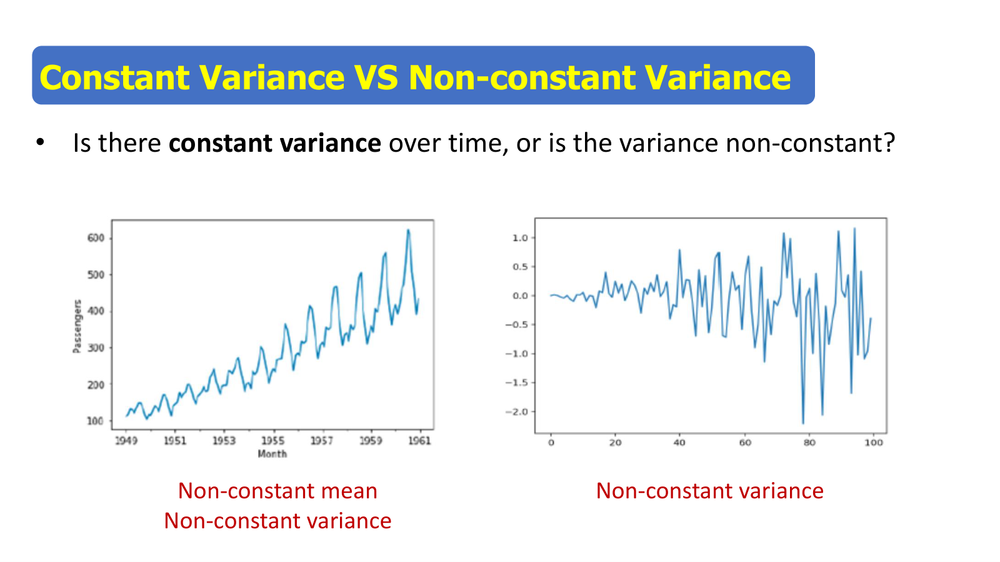
คำถามของหน้านี้คือความแปรปรวนคงที่ตามเวลาหรือไม่ กราฟแรกเป็นจำนวนผู้โดยสารสายการบินปี 1949 ถึง 1961 ระดับเฉลี่ยเพิ่มจากประมาณ 120 เป็น 450 และระยะจากยอดถึงท้องในแต่ละปีกว้างขึ้นจากประมาณ 40 เป็น 200 จึงเป็น Non-constant mean และ Non-constant variance กราฟที่สองมี 100 จุดที่แกว่งรอบ 0 ตลอด ช่วงแรกแกว่งแคบประมาณ ±0.1 ช่วงท้ายแกว่งระหว่าง −2 ถึง 1 จึงมี mean คงที่แต่ Non-constant variance สองสมบัตินี้แยกจากกัน: mean คือระดับกลางของเส้น ส่วน variance คือความกว้างของการแกว่งรอบระดับกลาง
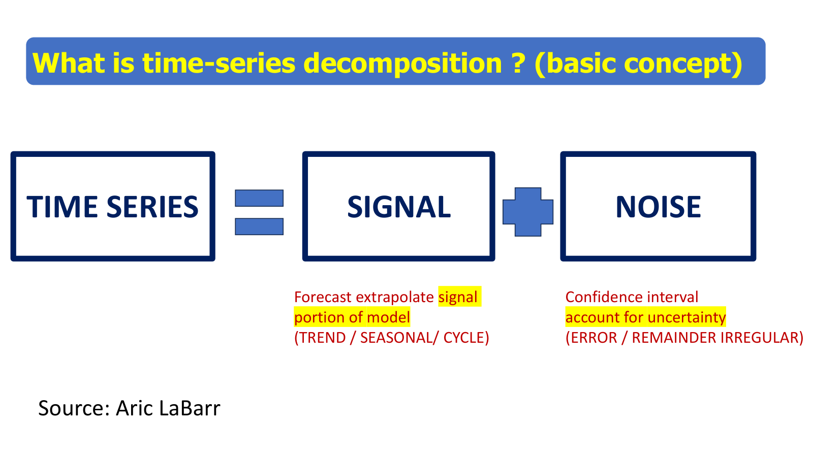
แนวคิดของ decomposition คือ TIME SERIES ประกอบด้วย SIGNAL และ NOISE ส่วน signal คือ (TREND / SEASONAL/ CYCLE) ใช้สำหรับ Forecast extrapolate signal portion of model คือพยากรณ์โดยยืดส่วนที่มีแบบแผนต่อไปในอนาคต ส่วน noise คือ (ERROR / REMAINDER IRREGULAR) ใช้สำหรับ Confidence interval account for uncertainty noise พยากรณ์ไม่ได้ แต่ขนาดของมันบอกได้ว่าค่าจริงจะคลาดจากค่าพยากรณ์ได้ประมาณเท่าใด เปรียบได้กับการฟังวิทยุ: signal คือเพลง และ noise คือเสียงซ่า เราทำนายทำนองท่อนต่อไปของเพลงได้ แต่ทำนายเสียงซ่าไม่ได้ ทำได้เพียงบอกว่าดังประมาณเท่าใด
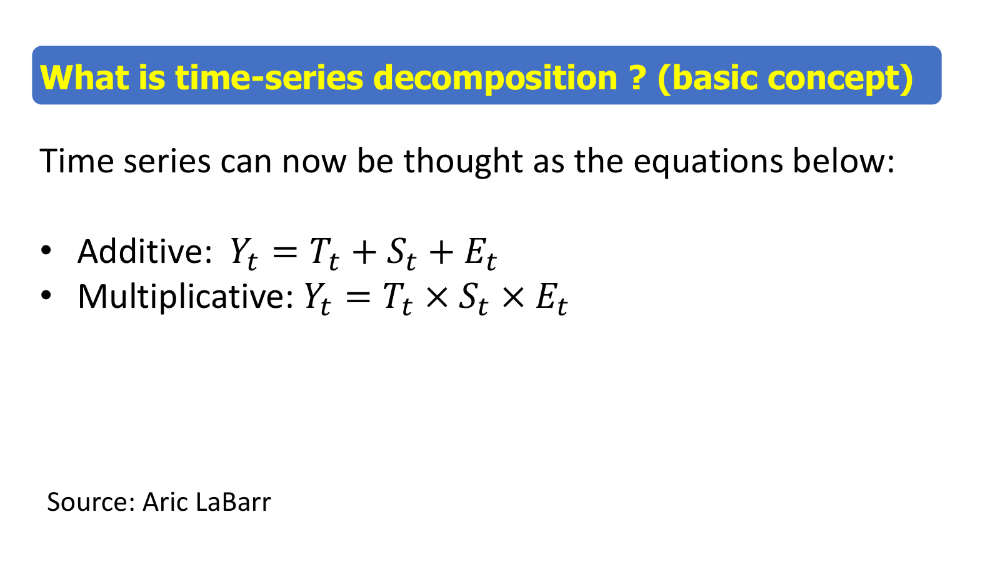
Decomposition เขียนเป็นสมการได้สองแบบ โดย \(T\) คือ trend, \(S\) คือ seasonal และ \(E\) คือ error แบบ additive คือ \(Y_t=T_t+S_t+E_t\) และแบบ multiplicative คือ \(Y_t=T_t\times S_t\times E_t\)
| ผลของฤดูร้อน | ปีแรก | ปีที่สิบ | ส่วนที่สูงกว่า trend | |
|---|---|---|---|---|
| Additive | \(S=+20\) | \(100+20=120\) | \(400+20=420\) | 20 หน่วยทุกปี |
| Multiplicative | \(S=1.2\) | \(100\times1.2=120\) | \(400\times1.2=480\) | 20 หน่วยในปีแรก 80 หน่วยในปีที่สิบ |
ใน additive ขนาดของ seasonal คงที่ ใน multiplicative ขนาดของ seasonal โตตามระดับของ trend วิธีเลือกจากกราฟ: ถ้าความสูงของยอดประจำฤดูกาลเท่าเดิมทุกปี ใช้ additive ถ้าความสูงของยอดกว้างขึ้นเมื่อระดับสูงขึ้น ใช้ multiplicative
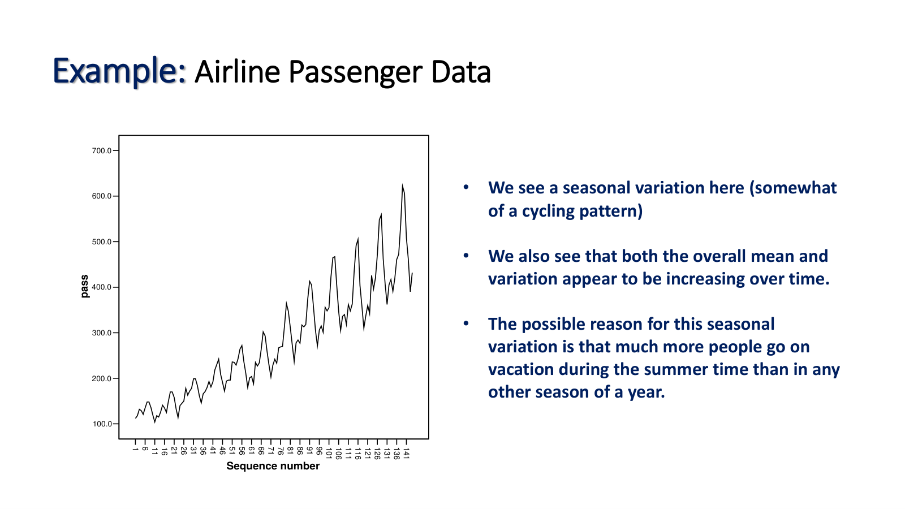
ข้อมูลผู้โดยสาร 144 เดือน ช่วงต้นอยู่ที่ประมาณ 110 ถึง 150 และช่วงท้ายอยู่ที่ประมาณ 400 ถึง 620 สไลด์สรุปสามข้อ ข้อแรก We see a seasonal variation here (somewhat of a cycling pattern) ข้อที่สอง We also see that both the overall mean and variation appear to be increasing over time. ข้อที่สาม The possible reason for this seasonal variation is that much more people go on vacation during the summer time than in any other season of a year. เนื่องจาก variation เพิ่มขึ้นตามเวลา ระยะจากยอดถึงท้องในปีแรกประมาณ 40 และในปีท้ายประมาณ 200 ขนาดของ seasonal จึงโตตามระดับ ซึ่งเป็นลักษณะของแบบ multiplicative
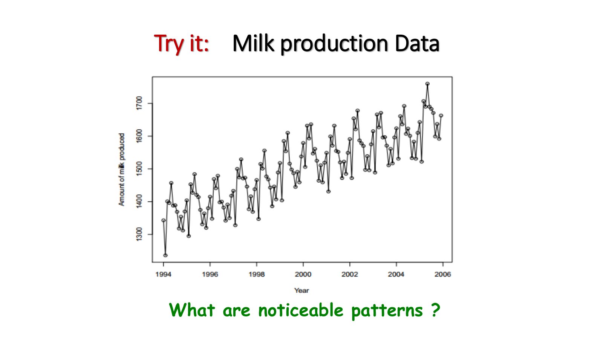
สไลด์ถามว่า What are noticeable patterns ? ข้อมูลการผลิตนมรายเดือนมีรูปแบบสามข้อ ข้อแรก trend ขาขึ้น: ปี 1994 อยู่ที่ประมาณ 1,300 ถึง 1,400 และปี 2006 อยู่ที่ประมาณ 1,600 ถึง 1,750 ข้อที่สอง seasonal: ในแต่ละปีมียอดและท้องที่ตำแหน่งเดิม ซ้ำปีละรอบ ข้อที่สาม ความกว้างของการแกว่งในแต่ละปีใกล้เคียงกัน ประมาณ 150 ถึง 250 ความแปรปรวนจึงค่อนข้างคงที่ ซึ่งเข้ากับแบบ additive
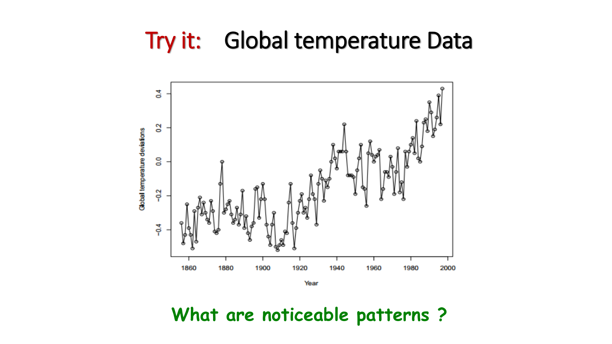
คำถามเดียวกัน What are noticeable patterns ? กับข้อมูลอุณหภูมิโลกรายปี ช่วงปี 1856 ถึง 1920 ค่าอยู่ระหว่างประมาณ −0.5 ถึง −0.2 และแทบไม่เพิ่ม ช่วงปี 1920 ถึง 1940 เพิ่มขึ้นมาใกล้ 0 ช่วงปี 1940 ถึง 1975 ค่อนข้างราบ และหลังปี 1975 เพิ่มถึงประมาณ 0.4 จึงมี trend ขาขึ้นที่ไม่เป็นเส้นตรง ข้อมูลเป็นรายปี จึงไม่มี seasonal ให้เห็น เพราะ seasonal ต้องมีการวัดหลายครั้งภายในหนึ่งปี ข้อมูลชุดนี้กลับมาเป็นตัวอย่างหลักของข้อมูลที่ไม่ stationary ใน Lesson 3
ครึ่งหลังของ Lecture 1 เปลี่ยนจากการดูกราฟเป็นการเขียนโมเดลด้วยคณิตศาสตร์ เครื่องมือที่ใช้คือตัวแปรสุ่มและค่าสรุปสามตัว คือค่าคาดหมาย ความแปรปรวน และ covariance
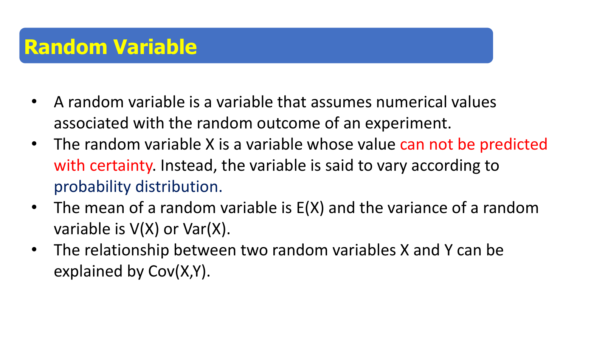
Random variable คือตัวแปรที่รับค่าตัวเลขตามผลลัพธ์สุ่มของการทดลอง สไลด์ระบุว่าตัวแปรสุ่ม X เป็นตัวแปรที่ค่า can not be predicted with certainty แต่แปรผันตาม probability distribution. ตัวอย่างคือแต้มของลูกเต๋า: ไม่รู้ว่าครั้งหน้าจะได้แต้มใด แต่รู้ว่าแต่ละแต้มมีโอกาส 1 ใน 6 ค่าเฉลี่ยของตัวแปรสุ่มเขียนว่า \(E(X)\) ความแปรปรวนเขียนว่า \(V(X)\) หรือ \(\mathrm{Var}(X)\) และความสัมพันธ์ระหว่างตัวแปรสุ่มสองตัวอธิบายด้วย \(\mathrm{Cov}(X,Y)\)
| ค่าสรุป | ความหมาย | ตัวอย่างลูกเต๋า |
|---|---|---|
| \(E(X)\) | ค่าเฉลี่ยระยะยาว ถ้าทดลองซ้ำจำนวนมาก | \((1+2+3+4+5+6)/6=3.5\) |
| \(\mathrm{Var}(X)\) | ขนาดของการแกว่งรอบค่าเฉลี่ย | \(E(X^2)-3.5^2=15.17-12.25=2.92\) |
| \(\mathrm{Cov}(X,Y)\) | X และ Y เคลื่อนไปด้วยกันเพียงใด บวกคือทางเดียวกัน ลบคือสวนทาง | ลูกเต๋าสองลูกที่ทอยแยกกันมี Cov เป็น 0 |
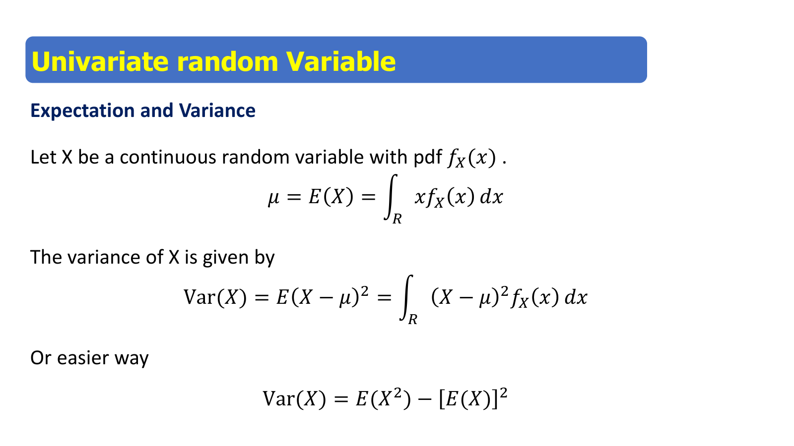
หน้านี้ให้นิยามของ Expectation and Variance สำหรับตัวแปรสุ่มต่อเนื่อง X ที่มี pdf \(f_X(x)\) ค่าเฉลี่ยคือ \(\mu=E(X)=\int_R xf_X(x)\,dx\) และความแปรปรวนคือ \(\mathrm{Var}(X)=E(X-\mu)^2=\int_R(x-\mu)^2f_X(x)\,dx\) เครื่องหมายอินทิกรัลทำหน้าที่เดียวกับการบวกถ่วงน้ำหนักในกรณีลูกเต๋า คือนำแต่ละค่าคูณกับโอกาสของค่านั้นแล้วรวมกัน สไลด์ให้สูตรที่คำนวณง่ายกว่า: \(\mathrm{Var}(X)=E(X^2)-[E(X)]^2\) ซึ่งเป็นสูตรที่ใช้กับลูกเต๋าในตารางข้างบน วิชานี้ไม่ต้องคำนวณอินทิกรัลโดยตรง สิ่งที่ใช้คือกฎของ E และ Var ในหน้า 29
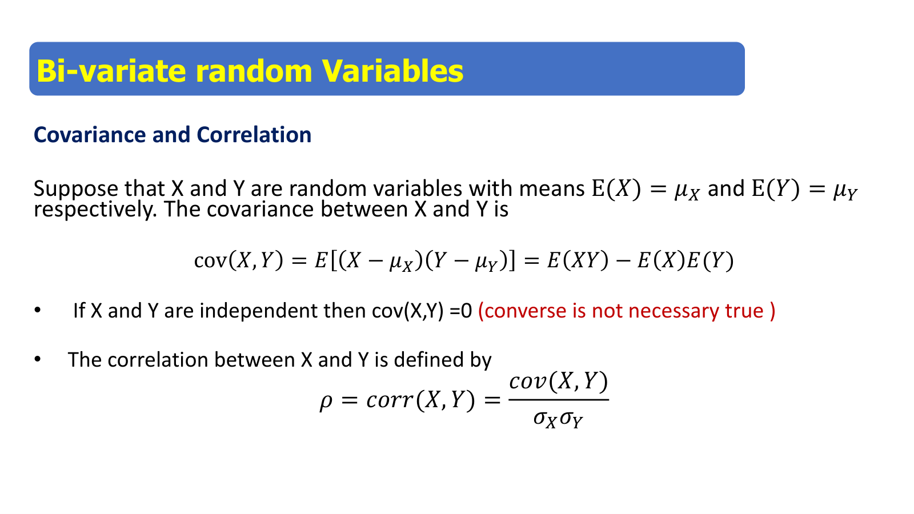
หน้านี้ให้นิยามของ Covariance and Correlation สำหรับ X และ Y ที่มีค่าเฉลี่ย \(\mu_X\) และ \(\mu_Y\) covariance คือ \(\mathrm{cov}(X,Y)=E[(X-\mu_X)(Y-\mu_Y)]=E(XY)-E(X)E(Y)\) และ correlation คือ \(\rho=\mathrm{corr}(X,Y)=\mathrm{cov}(X,Y)/(\sigma_X\sigma_Y)\) correlation คือ covariance ที่หารด้วยส่วนเบี่ยงเบนมาตรฐานของทั้งสองตัว จึงไม่มีหน่วยและมีค่าระหว่าง −1 ถึง 1 สไลด์ระบุข้อควรระวัง: ถ้า X และ Y เป็นอิสระต่อกันแล้ว cov(X,Y) = 0 แต่ (converse is not necessary true ) ตัวอย่างค้าน: ให้ X มีค่า −1, 0, 1 ด้วยโอกาสเท่ากัน และ \(Y=X^2\) จะได้ \(E(X)=0\) และ \(E(XY)=E(X^3)=(-1+0+1)/3=0\) covariance จึงเป็น 0 ทั้งที่ Y ถูกกำหนดจาก X ทั้งหมด covariance วัดเฉพาะความสัมพันธ์เชิงเส้น
| ข้อ | กฎ | อ่านว่า |
|---|---|---|
| 1 | \(E(aX+bY)=aE(X)+bE(Y)\) | ดึงค่าคงที่ออก และแยกผลบวกได้ |
| 2 | \(\mathrm{Var}(aX)=a^2\mathrm{Var}(X)\) | ค่าคงที่ออกมาต้องยกกำลังสอง |
| 3 | \(\mathrm{Var}(X+Y)=\mathrm{Var}(X)+\mathrm{Var}(Y)+2\mathrm{Cov}(X,Y)\) | ถ้าไม่สัมพันธ์กัน พจน์สุดท้ายเป็น 0 |
| 4 | \(\mathrm{Cov}(X,a)=0\) | ค่าคงที่ไม่แกว่ง จึงไม่เคลื่อนไปกับสิ่งใด |
| 5 | \(\mathrm{Cov}(aX,bY)=ab\,\mathrm{Cov}(X,Y)\) | และกระจายเข้าผลบวกได้ทุกคู่ |
| 6 | \(\mathrm{Cov}(X,X)=\mathrm{Var}(X)\) | covariance กับตัวเองคือความแปรปรวน |
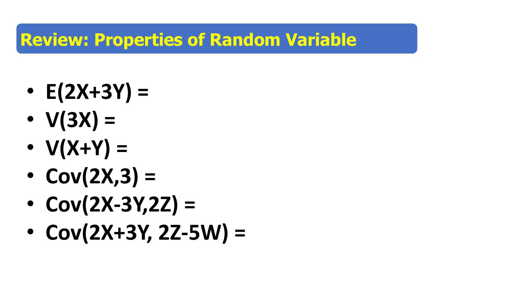
สไลด์ให้โจทย์หกข้อโดยเว้นคำตอบไว้ ทุกข้อใช้กฎในตารางข้างบน
กฎข้อ 1: \(=2E(X)+3E(Y)\)
กฎข้อ 2: \(=3^2V(X)=9V(X)\) คำตอบไม่ใช่ \(3V(X)\)
กฎข้อ 3: \(=V(X)+V(Y)+2\mathrm{Cov}(X,Y)\) ถ้า X และ Y เป็นอิสระต่อกัน เหลือ \(V(X)+V(Y)\)
3 เป็นค่าคงที่ กฎข้อ 4: \(=0\)
กระจายทีละคู่: \(\mathrm{Cov}(2X,2Z)+\mathrm{Cov}(-3Y,2Z)=4\mathrm{Cov}(X,Z)-6\mathrm{Cov}(Y,Z)\)
ก้อนแรกมีสองตัว ก้อนหลังมีสองตัว จึงมี 4 คู่: \((2)(2)\), \((2)(-5)\), \((3)(2)\), \((3)(-5)\)
\[=4\mathrm{Cov}(X,Z)-10\mathrm{Cov}(X,W)+6\mathrm{Cov}(Y,Z)-15\mathrm{Cov}(Y,W)\]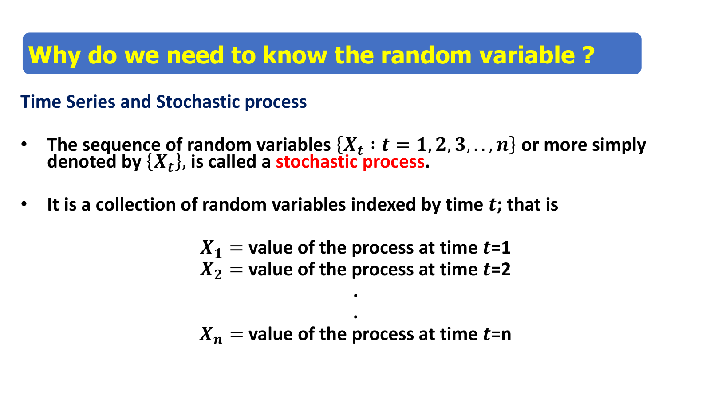
หน้านี้ตอบคำถามว่าทำไมต้องรู้เรื่องตัวแปรสุ่ม ลำดับของตัวแปรสุ่ม \(\{X_t:t=1,2,3,\dots,n\}\) หรือเขียนสั้นว่า \(X_t\) เรียกว่า stochastic process เป็นกลุ่มของตัวแปรสุ่มที่มีเวลา t เป็นดัชนี: \(X_1\) คือค่าของ process ณ เวลา 1, \(X_2\) ณ เวลา 2 ไปจนถึง \(X_n\) แนวคิดสำคัญคือ ค่าที่เห็นในข้อมูลแต่ละจุดเป็นเพียงค่าเดียวที่สุ่มออกมาจากตัวแปรสุ่มของเวลานั้น เปรียบได้กับการทอยลูกเต๋า n ลูกเรียงกัน ลูกละเวลา ข้อมูลที่ได้คือแต้มที่ออกหนึ่งชุด ถ้าทอยใหม่ทั้งหมดจะได้อีกชุดที่ต่างออกไป ข้อมูลจริงมีเพียงชุดเดียว เพราะเวลาย้อนกลับไม่ได้
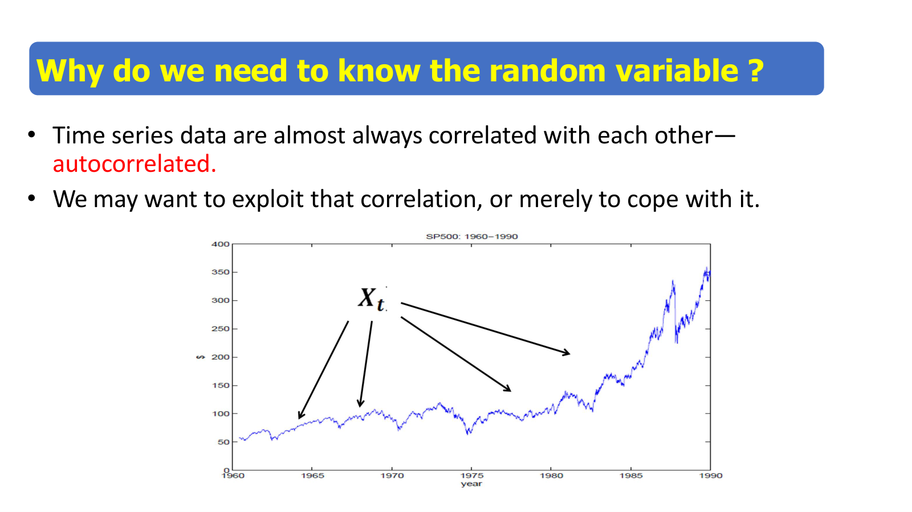
ข้อมูล time series มีความสัมพันธ์กันเองเกือบทุกครั้ง เรียกว่า autocorrelated. ในกราฟ S&P 500 ทุกจุดบนเส้นเป็น \(X_t\) คนละตัว ค่าของปี 1983 ใกล้กับค่าของปี 1982 มากกว่าค่าของปี 1965 ค่าที่อยู่ติดกันจึงสัมพันธ์กัน สไลด์บอกสองทางเลือก: อาจต้องการ exploit ความสัมพันธ์นั้น คือใช้พยากรณ์ หรืออย่างน้อยต้อง cope กับมัน เพราะวิธีสถิติที่สมมติว่าข้อมูลเป็นอิสระต่อกันจะให้ผลผิดถ้ามองข้ามความสัมพันธ์นี้
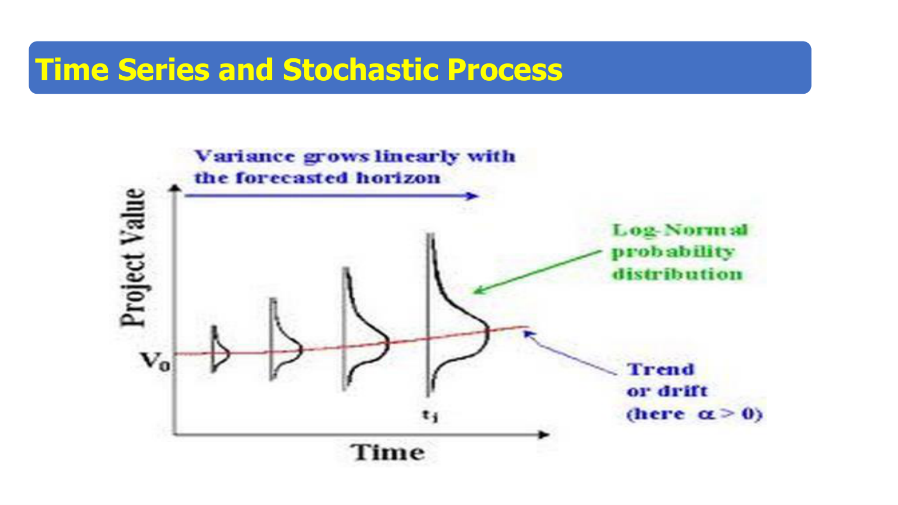
ภาพนี้แสดงว่าตัวแปรสุ่มที่เรียงตามเวลามีลักษณะอย่างไร จุดเริ่มต้น \(V_0\) เป็นค่าที่รู้แน่นอน ทุกเวลาถัดไป ค่าที่เป็นไปได้กระจายเป็นการแจกแจง (ในภาพเป็น Log-Normal probability distribution) ศูนย์กลางของการแจกแจงเลื่อนขึ้นตาม trend หรือ drift และภาพระบุว่า variance grows linearly with the forecasted horizon ยิ่งมองไปข้างหน้าไกล การแจกแจงยิ่งกว้าง ความไม่แน่นอนยิ่งมาก ลักษณะนี้ปรากฏอีกครั้งในหัวข้อ 9 ซึ่ง random walk มีความแปรปรวน \(t\sigma_w^2\) ที่โตเป็นเส้นตรงตามเวลา
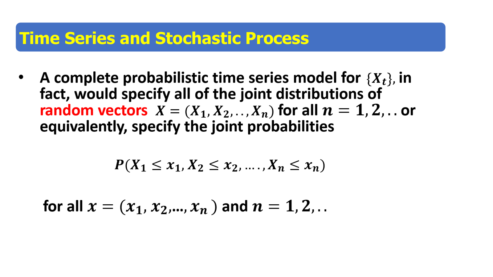
โมเดลความน่าจะเป็นที่สมบูรณ์ของ \(\{X_t\}\) ต้องระบุ joint distribution ของเวกเตอร์สุ่ม \((X_1,\dots,X_n)\) สำหรับทุก n คือระบุ \(P(X_1\le x_1,X_2\le x_2,\dots,X_n\le x_n)\) สำหรับทุกค่า x และทุก n หมายความว่าต้องรู้โอกาสของทุกเส้นทางที่เป็นไปได้ของข้อมูลทั้งชุด ซึ่งมีข้อมูลมากเกินกว่าจะระบุได้ในทางปฏิบัติ
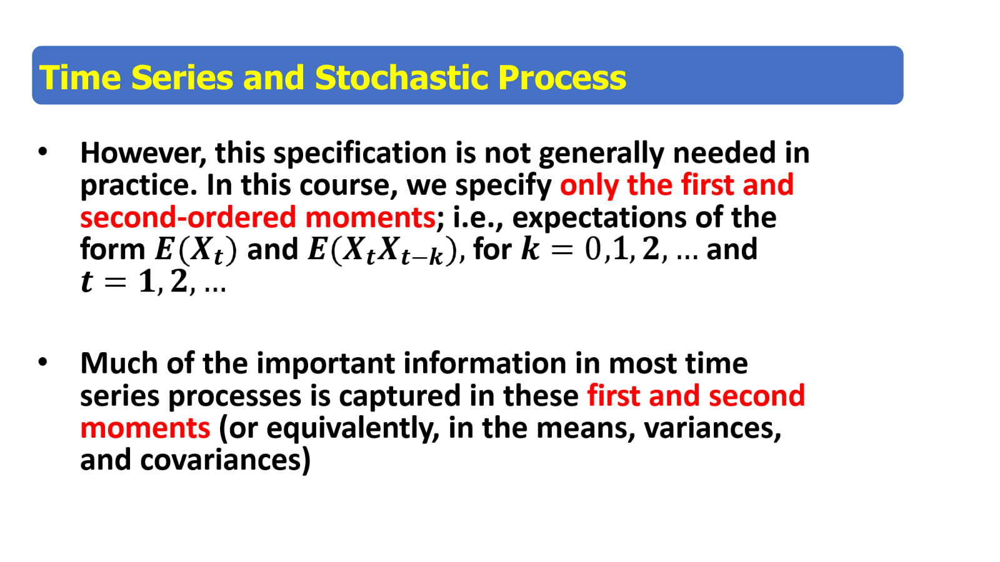
ทางออกคือระบุเฉพาะส่วนที่สำคัญ วิชานี้ระบุเฉพาะ first และ second-ordered moments คือค่าคาดหมายในรูป \(E(X_t)\) และ \(E(X_tX_{t-k})\) สไลด์ให้เหตุผลว่า สารสนเทศสำคัญส่วนใหญ่ของ time series process อยู่ใน moment สองอันดับแรกนี้ หรือกล่าวอีกแบบคืออยู่ใน means, variances และ covariances moment อันดับหนึ่งคือค่าเฉลี่ย ส่วน moment อันดับสองให้ความแปรปรวนเมื่อ \(k=0\) และ covariance เมื่อ \(k\ge1\) หัวข้อถัดไปตั้งชื่อให้ปริมาณเหล่านี้
สามนิยามนี้คือ moment อันดับหนึ่งและสองที่เขียนเป็นฟังก์ชันของเวลา ใช้ในทุกบทของวิชา
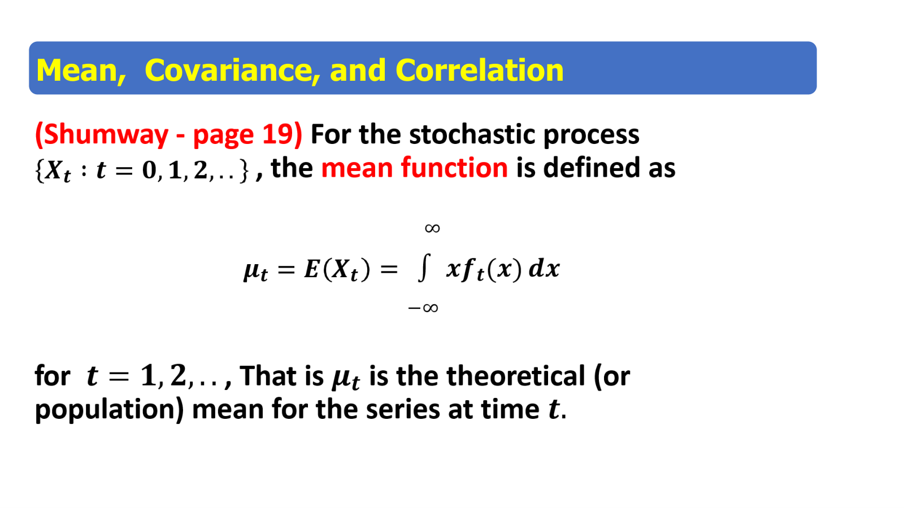
Mean function คือ \(\mu_t=E(X_t)=\int_{-\infty}^{\infty}xf_t(x)\,dx\) สำหรับ \(t=1,2,\dots\) เป็นค่าเฉลี่ยทางทฤษฎีของ series ณ เวลา t ตัวห้อย t มีไว้เพราะแต่ละเวลาอาจมีค่าเฉลี่ยไม่เท่ากัน เช่น ข้อมูลที่มี trend ขาขึ้นมี \(\mu_t\) ที่เพิ่มตามเวลา ส่วนข้อมูลที่แกว่งรอบระดับเดิมมี \(\mu_t\) คงที่
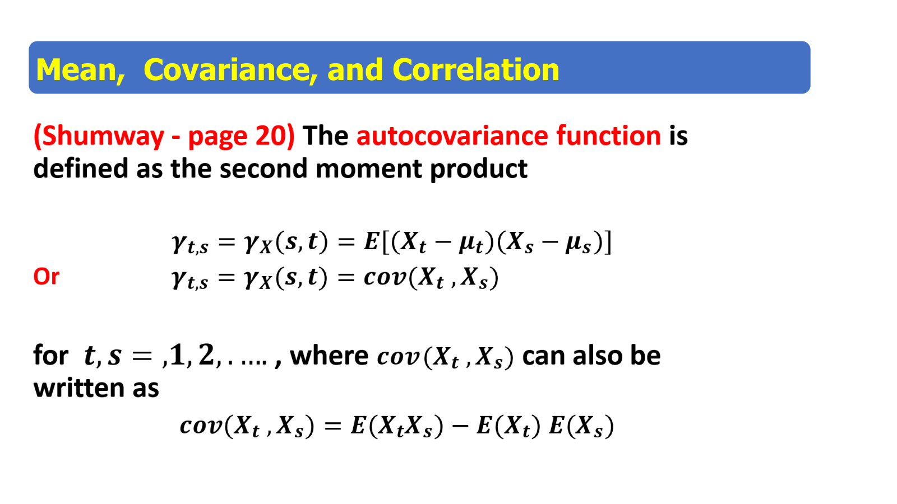
Autocovariance function นิยามเป็น second moment product: \(\gamma_{t,s}=\gamma_X(s,t)=E[(X_t-\mu_t)(X_s-\mu_s)]=\mathrm{cov}(X_t,X_s)=E(X_tX_s)-E(X_t)E(X_s)\) เป็น covariance ตามหัวข้อ 4 แต่วัดระหว่างตัวแปรตัวเดียวกันที่สองเวลา คำว่า auto หมายถึงกับตัวเอง ถ้า \(t=s\) จะได้ \(\gamma_{t,t}=\mathrm{Var}(X_t)\) ตามกฎข้อ 6 ค่า \(\gamma_{t,s}\) ที่เป็นบวกหมายความว่า เมื่อค่าที่เวลา s สูงกว่าค่าเฉลี่ย ค่าที่เวลา t มีแนวโน้มสูงกว่าค่าเฉลี่ยด้วย
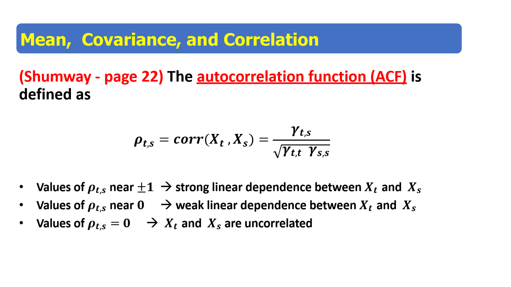
Autocorrelation function คือ \(\rho_{t,s}=\mathrm{corr}(X_t,X_s)=\dfrac{\gamma_{t,s}}{\sqrt{\gamma_{t,t}\,\gamma_{s,s}}}\) เป็น autocovariance ที่หารด้วยส่วนเบี่ยงเบนมาตรฐานของทั้งสองเวลา จึงมีค่าระหว่าง −1 ถึง 1 และเทียบข้าม series ได้ สไลด์ให้การตีความสามระดับ: ค่าใกล้ ±1 แสดง strong linear dependence ระหว่าง \(X_t\) กับ \(X_s\) ค่าใกล้ 0 แสดง weak linear dependence และค่าเท่ากับ 0 แสดงว่า \(X_t\) กับ \(X_s\) uncorrelated
\(\mu_t=E(5)+E(w_t)=5+0=5\) เท่ากันทุกเวลา
\(\gamma_{t,t}=\mathrm{Var}(5+w_t)=\mathrm{Var}(w_t)=4\) การบวกค่าคงที่ไม่เปลี่ยนการแกว่ง
\(\mathrm{cov}(5+w_t,5+w_s)=\mathrm{cov}(w_t,w_s)=0\) เพราะเป็นอิสระต่อกัน
เมื่อ \(t\ne s\): \(\rho_{t,s}=0/\sqrt{4\cdot4}=0\) และเมื่อ \(t=s\): \(\rho_{t,t}=4/4=1\)
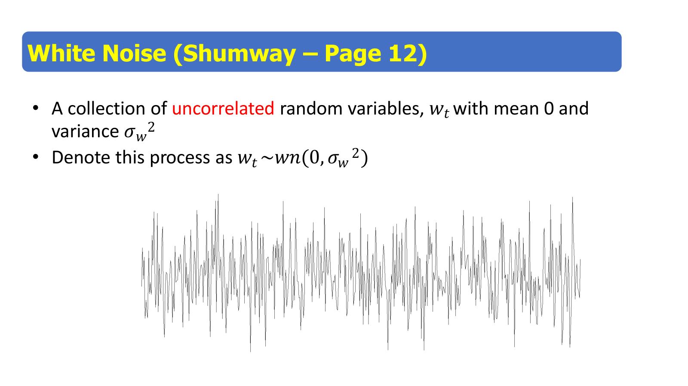
White noise คือกลุ่มของตัวแปรสุ่มที่ uncorrelated เขียนว่า \(w_t\) มีค่าเฉลี่ย 0 และความแปรปรวน \(\sigma_w^2\) เขียนย่อว่า \(w_t\sim wn(0,\sigma_w^2)\) กราฟตัวอย่างแกว่งขึ้นลงถี่รอบค่ากลางเดียวตลอดช่วง ความกว้างเท่าเดิมตั้งแต่ต้นจนจบ และไม่มีช่วงที่ค่าเกาะกลุ่มสูงหรือต่ำติดกันนาน ค่าก่อนหน้าไม่บอกอะไรเกี่ยวกับค่าถัดไป นี่คือความหมายของ uncorrelated ในกราฟ ชื่อ white noise มาจากแสงสีขาวซึ่งมีทุกความถี่ผสมกันเท่า ๆ กัน เสียงที่มีสมบัติเดียวกันคือเสียงซ่าของวิทยุที่ไม่ได้จูนคลื่น
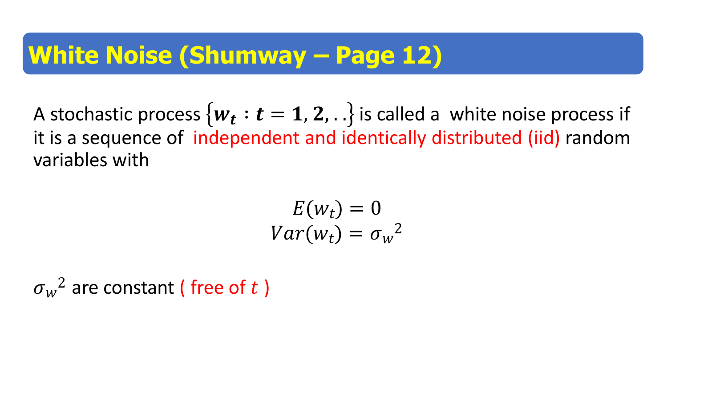
หน้านี้ให้นิยามที่เข้มขึ้น Stochastic process \(\{w_t:t=1,2,\dots\}\) เรียกว่า white noise process ถ้าเป็นลำดับของตัวแปรสุ่มที่ independent and identically distributed (iid) โดย \(E(w_t)=0\), \(\mathrm{Var}(w_t)=\sigma_w^2\) และ \(\sigma_w^2\) เป็นค่าคงที่ ( free of t ) คำว่า independent เข้มกว่า uncorrelated เพราะหมายถึงไม่มีความสัมพันธ์รูปแบบใดเลย ไม่เฉพาะเชิงเส้น ส่วน identically distributed หมายถึงทุกเวลามาจากการแจกแจงเดียวกัน และ free of t หมายถึงค่าไม่เปลี่ยนตามเวลา
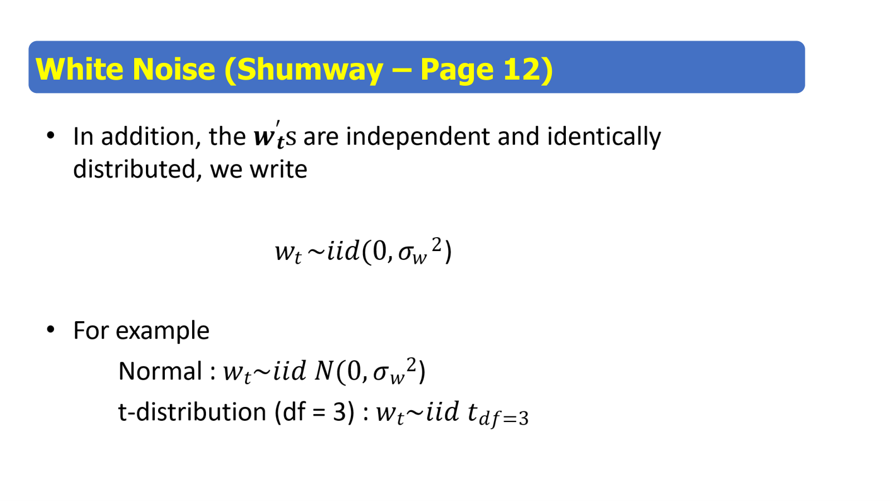
White noise แบบ iid เขียนว่า \(w_t\sim iid(0,\sigma_w^2)\) การแจกแจงเป็นแบบใดก็ได้ที่มีค่าเฉลี่ย 0 และความแปรปรวนคงที่ ตัวอย่างในสไลด์: ถ้าเป็น Normal เขียนว่า \(w_t\sim iid\,N(0,\sigma_w^2)\) ซึ่งเรียกว่า Gaussian white noise และถ้าเป็น t-distribution ที่ df = 3 เขียนว่า \(w_t\sim iid\,t_{df=3}\) บทต่อ ๆ ไปใช้ Gaussian white noise เป็นหลัก
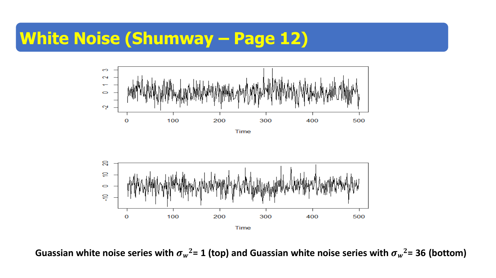
กราฟบนเป็น Gaussian white noise ที่ \(\sigma_w^2=1\) และกราฟล่างที่ \(\sigma_w^2=36\) ทั้งสองมีรูปแบบเดียวกัน ต่างกันที่สเกล เมื่อ \(\sigma_w^2=1\) ส่วนเบี่ยงเบนมาตรฐานคือ 1 ค่าส่วนใหญ่อยู่ระหว่าง −2 ถึง 2 เมื่อ \(\sigma_w^2=36\) ส่วนเบี่ยงเบนมาตรฐานคือ 6 ค่าส่วนใหญ่อยู่ระหว่าง −12 ถึง 12 ความแปรปรวนเปลี่ยนเฉพาะความกว้างของการแกว่ง ไม่ได้สร้างแบบแผนใหม่
ข้อ 4 ตรวจด้วยตัวเลขได้ด้วย correlogram ใน Lesson 3
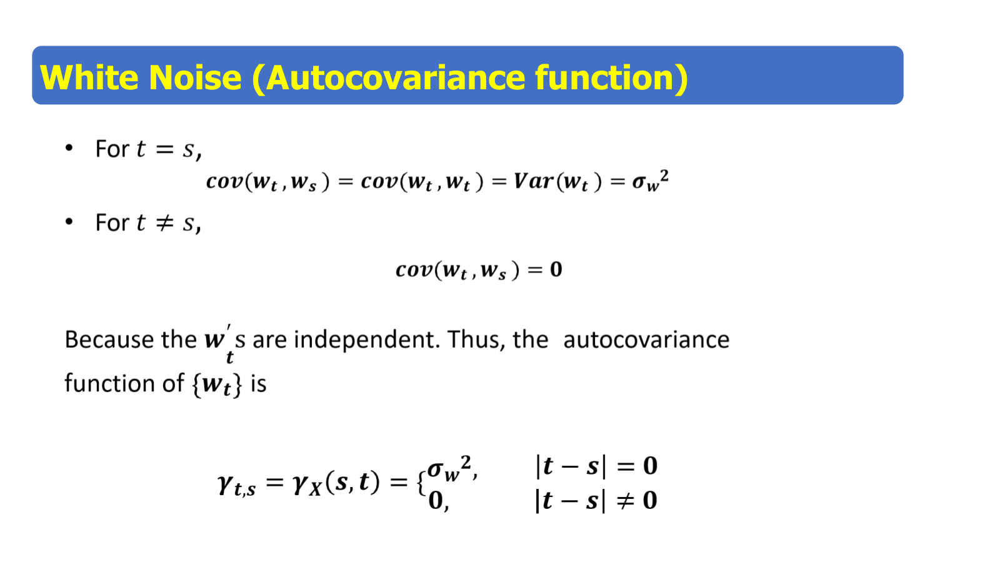
หน้านี้หา autocovariance ของ white noise โดยแยกสองกรณี เมื่อ \(t=s\) ได้ \(\mathrm{cov}(w_t,w_t)=\mathrm{Var}(w_t)=\sigma_w^2\) ตามกฎข้อ 6 เมื่อ \(t\ne s\) ตัวแปรทั้งสองเป็นอิสระต่อกัน จึงได้ \(\mathrm{cov}(w_t,w_s)=0\) สรุปได้ว่า \(\gamma_{t,s}=\sigma_w^2\) เมื่อ \(|t-s|=0\) และ \(\gamma_{t,s}=0\) เมื่อ \(|t-s|\ne0\)
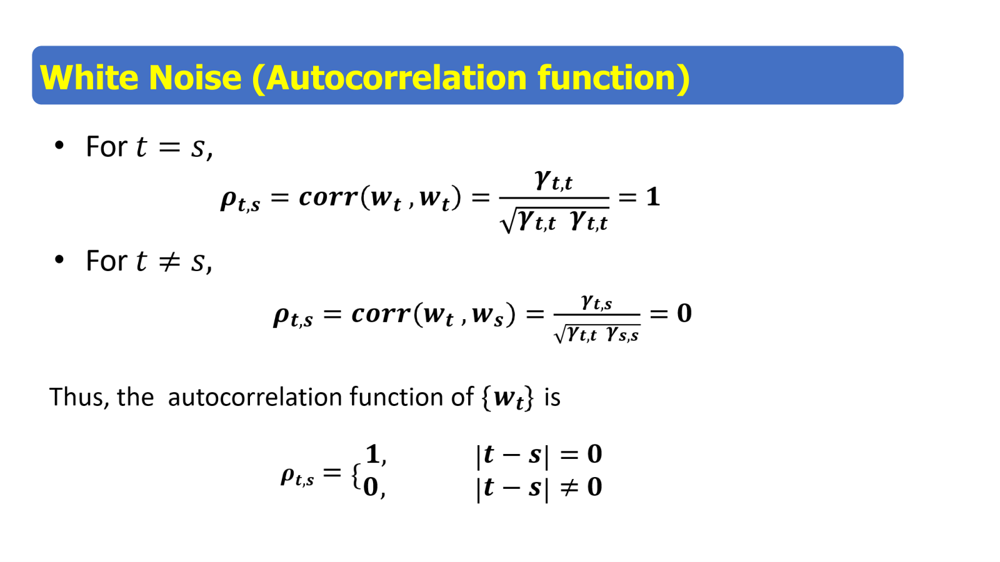
แทนผลจากหน้าก่อนลงในสูตร \(\rho_{t,s}=\gamma_{t,s}/\sqrt{\gamma_{t,t}\gamma_{s,s}}\) ตัวหารคือ \(\sqrt{\sigma_w^2\cdot\sigma_w^2}=\sigma_w^2\) ทั้งสองกรณี เมื่อ \(t=s\) ได้ \(\rho=\sigma_w^2/\sigma_w^2=1\) และเมื่อ \(t\ne s\) ได้ \(\rho=0\) white noise จึงสัมพันธ์กับตัวเองที่เวลาเดียวกันเต็มที่ และไม่สัมพันธ์กับเวลาอื่นเลย
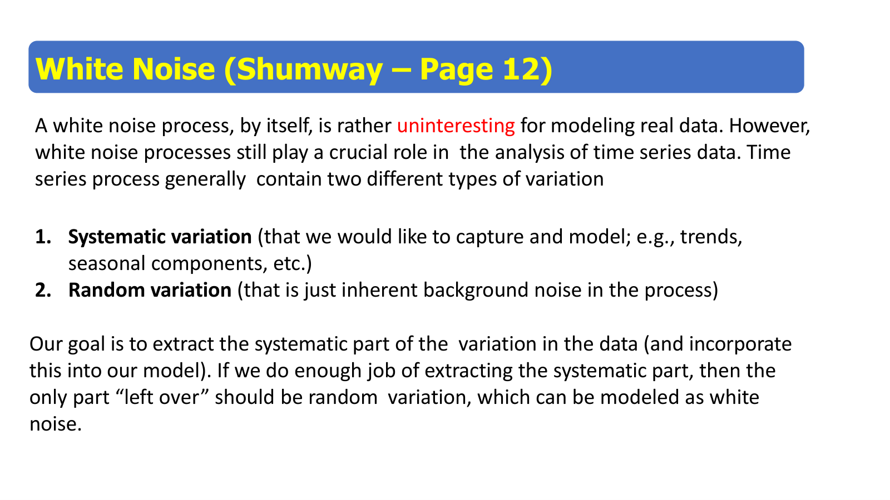
White noise process โดยตัวเองค่อนข้าง uninteresting สำหรับการสร้างโมเดลให้ข้อมูลจริง แต่มีบทบาทสำคัญในการวิเคราะห์ Time series process มี variation สองชนิด ชนิดแรกคือ systematic variation ที่ต้องการจับและสร้างเป็นโมเดล เช่น trend และ seasonal components ชนิดที่สองคือ random variation ซึ่งเป็น noise พื้นหลังของ process เป้าหมายคือดึงส่วน systematic ออกมาใส่ในโมเดล ถ้าทำได้ดีพอ ส่วนที่ “left over” ควรเป็น random variation ที่เป็น white noise ข้อนี้เป็นเกณฑ์ตรวจโมเดลตลอดวิชา: ถ้า residual ยังมีแบบแผน แสดงว่าโมเดลยังดึงส่วน systematic ออกไม่หมด
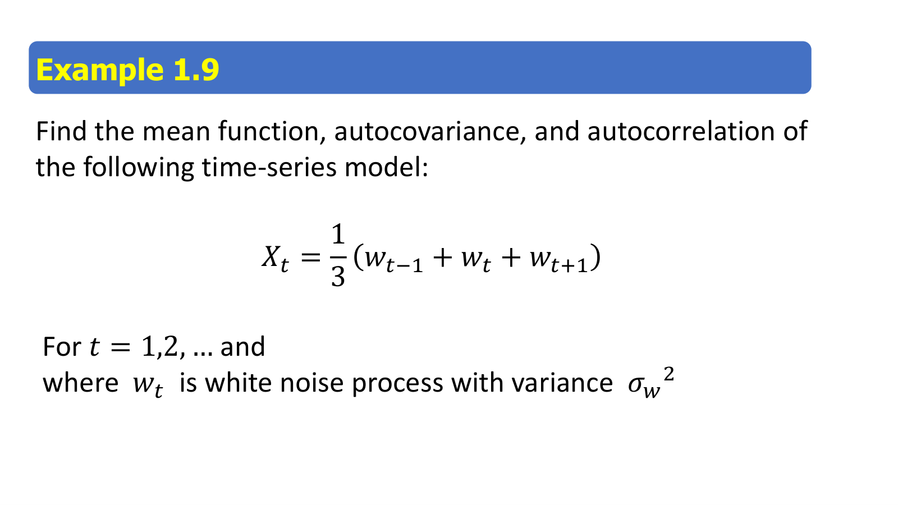
โจทย์ให้หา mean function, autocovariance และ autocorrelation ของโมเดล \(X_t=\tfrac13(w_{t-1}+w_t+w_{t+1})\) โดย \(w_t\) เป็น white noise ที่มีความแปรปรวน \(\sigma_w^2\) โมเดลนี้เฉลี่ย white noise สามค่าที่อยู่ติดกัน คือค่าก่อนหน้า ค่าปัจจุบัน และค่าถัดไป
เมื่อหา covariance ของผลรวมของ w สองก้อน ให้ทำสี่ขั้น
เหตุผล: เมื่อกระจาย covariance ทีละคู่ตามหัวข้อ 4 คู่ที่เป็น w คนละตัวให้ 0 ทั้งหมด เหลือเฉพาะคู่ที่เป็นตัวเดียวกัน
\(\mu_t=0\) ทุกเวลา
\(X_t\) ใช้ \(w_{t-1},w_t,w_{t+1}\) และ \(X_{t+h}\) ใช้ \(w_{t+h-1},w_{t+h},w_{t+h+1}\) สัมประสิทธิ์ของทุกตัวคือ \(\tfrac13\) ดังนั้นแต่ละตัวที่ตรงกันให้ \(\tfrac13\cdot\tfrac13\sigma_w^2=\tfrac19\sigma_w^2\)
| h | ก้อนของ \(X_t\) | ก้อนของ \(X_{t+h}\) | จำนวนที่ตรงกัน | \(\gamma(t,t+h)\) |
|---|---|---|---|---|
| 0 | t−1, t, t+1 | t−1, t, t+1 | 3 | \(\tfrac39\sigma_w^2\) |
| 1 | t−1, t, t+1 | t, t+1, t+2 | 2 | \(\tfrac29\sigma_w^2\) |
| 2 | t−1, t, t+1 | t+1, t+2, t+3 | 1 | \(\tfrac19\sigma_w^2\) |
| 3 | t−1, t, t+1 | t+2, t+3, t+4 | 0 | 0 |
ค่า h ที่ติดลบให้ผลเท่ากับค่าบวก เพราะ covariance สมมาตร
ตัวหารคือ \(\sqrt{\tfrac39\sigma_w^2\cdot\tfrac39\sigma_w^2}=\tfrac39\sigma_w^2\)
\[\rho(0)=1,\qquad \rho(\pm1)=\frac{2/9}{3/9}=\frac23,\qquad \rho(\pm2)=\frac{1/9}{3/9}=\frac13,\qquad \rho(h)=0\ \text{เมื่อ }|h|\ge3\]ผลทั้งหมดไม่ขึ้นกับ t: \(\mu_t\) คงที่ และ \(\gamma\) ขึ้นกับระยะห่าง h เท่านั้น สมบัตินี้คือ stationarity ซึ่งนิยามอย่างเป็นทางการใน Lesson 2 โมเดลนี้เป็นกรณีหนึ่งของ moving average ที่ศึกษาใน Lesson 5 และ ACF ที่ตัดเป็นศูนย์หลัง lag 2 เป็นลักษณะของโมเดลตระกูลนั้น
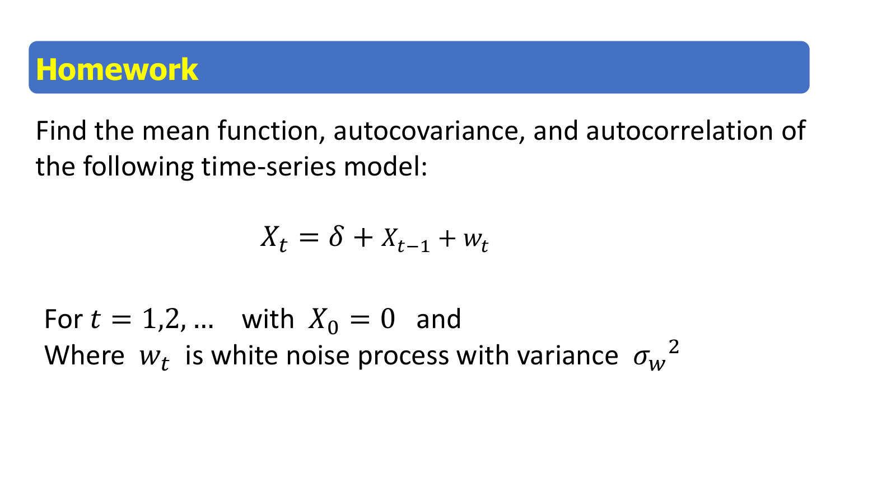
โจทย์ให้หา mean function, autocovariance และ autocorrelation ของ \(X_t=\delta+X_{t-1}+w_t\) สำหรับ \(t=1,2,\dots\) โดย \(X_0=0\) และ \(w_t\) เป็น white noise ที่มีความแปรปรวน \(\sigma_w^2\) โมเดลนี้เรียกว่า random walk with drift ค่าปัจจุบันเท่ากับค่าก่อนหน้า บวกค่าคงที่ \(\delta\) บวกแรงกระแทกสุ่ม เปรียบได้กับคนเดินที่ก้าวไปข้างหน้าก้าวละ \(\delta\) และเซซ้ายขวาแบบสุ่มทุกก้าว ตำแหน่งปัจจุบันคือผลรวมของทุกก้าวที่ผ่านมา การเซแต่ละครั้งจึงสะสมถาวร
โมเดลอ้างถึง \(X_{t-1}\) ซึ่งเป็นตัวแปรสุ่มเอง จึงแทนค่าย้อนกลับจนถึง \(X_0=0\)
\(X_1=\delta+X_0+w_1=\delta+w_1\)
\(X_2=\delta+X_1+w_2=2\delta+w_1+w_2\)
\(X_3=\delta+X_2+w_3=3\delta+w_1+w_2+w_3\)
\[X_t=t\delta+\sum_{j=1}^{t}w_j\]ค่าเฉลี่ยเป็นเส้นตรงที่มีความชัน \(\delta\) จึงขึ้นกับ t
ค่าคงที่ \(t\delta\) ไม่มีผลต่อ covariance ก้อนของ \(X_t\) มี \(w_1,\dots,w_t\) และก้อนของ \(X_{t+h}\) มี \(w_1,\dots,w_{t+h}\) ตัวที่ตรงกันมี t ตัว สัมประสิทธิ์เป็น 1 ทุกตัว
\[\gamma(t,t+h)=t\,\sigma_w^2\]รูปทั่วไปคือ \(\gamma(s,t)=\min(s,t)\,\sigma_w^2\)
เมื่อ \(h=0\): \(\mathrm{Var}(X_t)=t\sigma_w^2\) ความแปรปรวนโตเป็นเส้นตรงตามเวลา
ตัวอย่างตัวเลขเมื่อ \(h=1\): ที่ \(t=4\) ได้ \(\rho=\sqrt{4/5}=0.894\) และที่ \(t=100\) ได้ \(\sqrt{100/101}=0.995\) ยิ่งเวลาผ่านไปนาน ค่าที่อยู่ติดกันยิ่งสัมพันธ์กันสูง เพราะทั้งสองค่ามีแรงกระแทกสะสมชุดเดียวกันเกือบทั้งหมด
| Example 1.9 | Homework | |
|---|---|---|
| โมเดล | \(X_t=\tfrac13(w_{t-1}+w_t+w_{t+1})\) | \(X_t=\delta+X_{t-1}+w_t\) |
| Mean | 0 คงที่ | \(t\delta\) ขึ้นกับ t |
| Variance | \(\tfrac13\sigma_w^2\) คงที่ | \(t\sigma_w^2\) โตตาม t |
| Autocovariance | ขึ้นกับ h เท่านั้น | ขึ้นกับ t |
| ผลของแรงกระแทกหนึ่งครั้ง | อยู่สามช่วงเวลาแล้วหมด | สะสมถาวร |
| Stationary | ใช่ | ไม่ |
สองโจทย์นี้ใช้เทคนิคเดียวกัน แต่ให้ผลตรงข้ามกัน และเป็นตัวอย่างคู่เปรียบเทียบของเรื่อง stationarity ใน Lesson 2
ข้อต่อไปนี้ให้เขียนคำตอบเองก่อน แล้วจึงเปิดเฉลย
\(X_t\) มี \(w_t\) (สัมประสิทธิ์ 1) และ \(w_{t-1}\) (0.5) ส่วน \(X_{t+1}\) มี \(w_{t+1}\) (1) และ \(w_t\) (0.5)
\(\gamma(0)=(1\cdot1+0.5\cdot0.5)\sigma_w^2=1.25\sigma_w^2\)
\(\gamma(1)\): ตัวที่ตรงกันคือ \(w_t\) ได้ \((1)(0.5)\sigma_w^2=0.5\sigma_w^2\)
\(\gamma(2)=0\) เพราะไม่มีตัวที่ตรงกัน และ \(\rho(1)=0.5/1.25=0.4\)
คลี่สมการ: \(X_t=t\delta+\sum_{j=1}^{t}w_j\)
\(E(X_t)=t\delta\)
\(\gamma(t,t+h)=t\sigma_w^2\) เมื่อ \(h\ge0\) เพราะมี w ที่ตรงกัน t ตัว
\(\rho(t,t+h)=t\sigma_w^2/\sqrt{t\sigma_w^2(t+h)\sigma_w^2}=\sqrt{t/(t+h)}\)
ทุกค่าขึ้นกับ t จึงไม่ stationary
Trend ขาขึ้น เพราะระดับเฉลี่ยเพิ่มขึ้น
Seasonal เพราะยอดเกิดซ้ำทุกเดือนธันวาคม ผูกกับปฏิทิน รอบ 12 เดือน
ความแปรปรวนไม่คงที่ เพราะความสูงของยอดโตตามระดับ
ใช้ multiplicative \(Y_t=T_t\times S_t\times E_t\) เพราะขนาดของ seasonal โตตาม trend เช่นเดียวกับ Airline Passenger Data
Time series มี variation สองชนิด คือ systematic variation เช่น trend และ seasonal กับ random variation ซึ่งเป็น noise พื้นหลัง
เป้าหมายคือดึงส่วน systematic ออกมาใส่ในโมเดล ถ้าทำได้ดีพอ ส่วนที่เหลือควรเป็น random variation ที่เป็น white noise
White noise จึงเป็นส่วนประกอบพื้นฐานของโมเดลอื่น และเป็นเกณฑ์ตรวจว่าโมเดลดึงแบบแผนออกหมดหรือยัง
| หน้า | เนื้อหา | สอนที่ |
|---|---|---|
| 1 | ปก Basic Knowledge | etc — ปก |
| 2–8 | นิยาม time series, cross-sectional, ลักษณะ univariate, โครงสร้างข้อมูล, S&P 500, objectives | หัวข้อ 1 |
| 9 | หน้าคั่น Time-series components | etc — หน้าคั่น |
| 10–19 | Trend, Seasonality, Cycle, Irregular, Constant และ Non-constant variance | หัวข้อ 2 |
| 20–24 | Decomposition, Airline passengers, Milk production, Global temperature | หัวข้อ 3 |
| 25 | หน้าคั่น Time Series and Stochastic Process | etc — หน้าคั่น |
| 26–29 | Random variable, Expectation, Variance, Covariance, Review | หัวข้อ 4 |
| 30–34 | Stochastic process, autocorrelated, joint distribution, first and second moments | หัวข้อ 5 |
| 35–37 | Mean function, autocovariance, ACF | หัวข้อ 6 |
| 38–44 | White noise | หัวข้อ 7 |
| 45 | Example 1.9 | หัวข้อ 8 |
| 46 | Homework | หัวข้อ 9 |